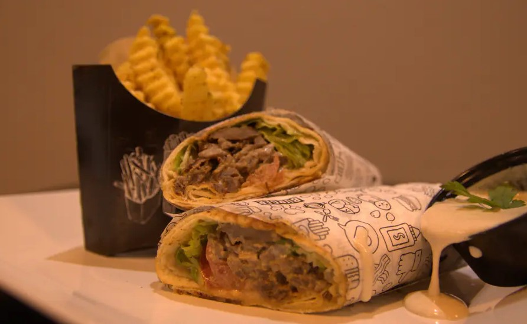
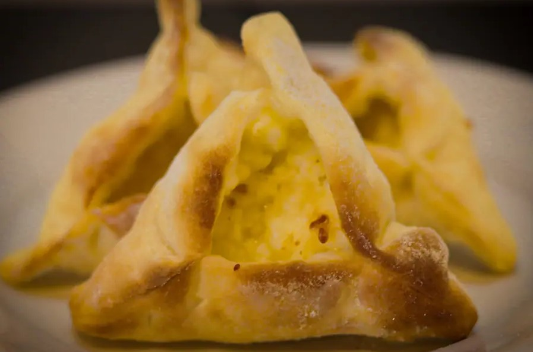
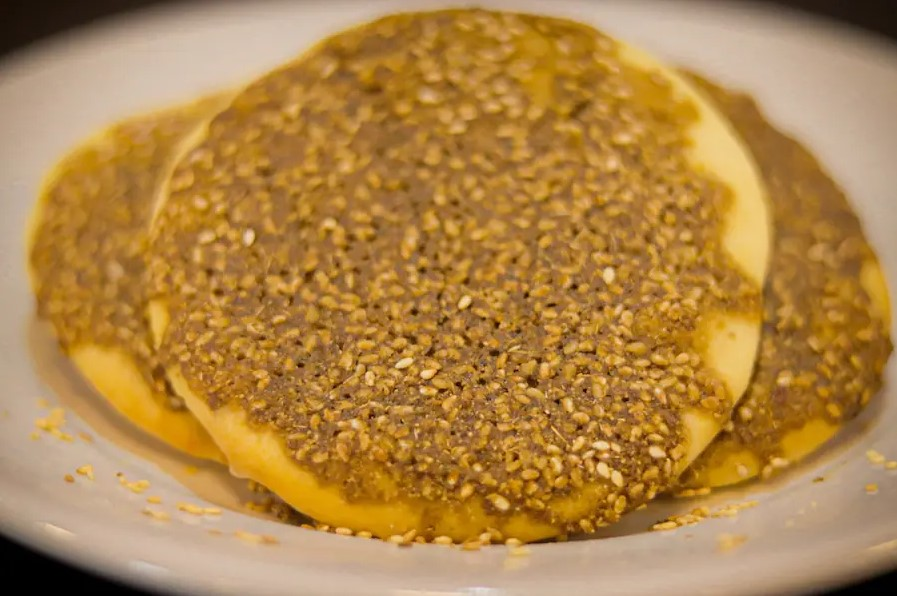

A culinária árabe tem raízes pra lá de milenares. A região foi o berço da civilização e das primeiras tradições culinárias. Definir a origem da cozinha árabe é uma tarefa complicada, alguns acreditam que foi das civilizações que povoaram o “crescente fértil” (região da mesopotâmia, entre os rios Tigre e Eufrates) que se propagou para países vizinhos como Egito, Creta e Pérsia. Nesses rios, além da prática da pesca, já eram usados sistemas de irrigação que cultivavam legumes, cereais e frutas. Da criação do gado aproveitava-se muito o leite para fazer coalhada e outros derivados.
Mesopotâmia (região que hoje corresponde, principalmente, ao território do atual Iraque), que, é dos mais importantes para compreensão desta civilização, e reflete, de certa maneira, o grau de complexidade alcançado por ela. Trata-se da culinária da antiga Mesopotâmia.
Originalmente, os árabes da península Arábica baseavam sua alimentação numa dieta de tâmaras, trigo, cevada, arroz e carne, com pouca variedade e uma ênfase em produtos similares ao iogurte, como o labne. À medida que os povos semitas indígenas da península se expandiram pelo Oriente Médio e pelas regiões vizinhas, seus gostos e ingredientes também variaram.
Shawarma
O prato que serve de ilustração para esta publicação é o Shawarma
Shawarma (também conhecido como Kebab) é um prato originalmente do oriente médio, composto de fatias finas de carne de carneiro ou frango, assada em um espeto vertical e servidas no pão árabe com legumes, homus, labneh e outros acompanhamentos.
 Shawarma pedido no restaurante Aramaico, bairro do Ipiranga - SP.Esfihas
Está é a mais popular receita árabe aqui em São Paulo, consumida largamente em suas diversas variações e combinações possíveis
Esfirra ou esfiha é uma pequena torta assada originária da Síria e do Líbano, e encontrada em outros países do Oriente Médio, como a Jordânia, Palestina e Iraque, além do Brasil e Argentina, para onde foi levada por imigrantes sírios e libaneses e se tornou extremamente popular. Existem diversas receitas de esfirra.
 Esfiha fechada de queijo branco pedida no restaurante Aramaico, bairro do Ipiranga - SP.Pela primeira vez que eu esperimentei o zaatar foi amor à primeira vista. É algo essencialmente único, tanto por não ser algo comum no Brasil, como pelo fato de cada família ter sua própria receita de zaatar. Basicamente consiste em uma mistura de especiarias usada como condimento
 Esfiha aberta de zaatar pedida no restaurante Aramaico, bairro do Ipiranga - SP.